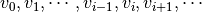
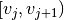

GenerateEventsFilter dialog.
Table of Contents
| Name | Direction | Type | Default | Description |
|---|---|---|---|---|
| InputWorkspace | Input | MatrixWorkspace | Mandatory | An input Matrix workspace. |
| OutputWorkspace | Output | Workspace | Mandatory | The name to use for the output SplittersWorkspace object, i.e., the filter. |
| InformationWorkspace | Output | TableWorkspace | Mandatory | Optional output for the information of each splitter workspace index |
| FastLog | Input | boolean | False | Fast log will make output workspace to be a matrix workspace. |
| StartTime | Input | string | The start time, such that all events before this time are filtered out. It could be (1) relative time to run start time in unit as specified property ‘UnitOfTime’ or (2) absolute time. Absolute time takes a string in format as 1990-01-01T00:00:00, while the relative time takes integer or float. | |
| StopTime | Input | string | The stop time, such that all events after this time are filtered out. It could be (1) relative time to run start time in unit as specified property ‘UnitOfTime’ or (2) absolute time. Absolute time takes a string in format as 1990-01-01T00:00:00, while the relative time takes integer or float. | |
| TimeInterval | Input | dbl list | Array for lengths of time intervals for splitters. If the array is empty, then there will be one splitter created from StartTime and StopTime. If the array has one value, then all splitters will have same time intervals. If the size of the array is larger than one, then the splitters can have various time interval values. | |
| UnitOfTime | Input | string | Seconds | StartTime, StopTime and DeltaTime can be given in various unit.The unit can be ‘Seconds’ or ‘Nanoseconds’ from run start time.They can also be defined as ‘Percentage’ of total run time. Allowed values: [‘Seconds’, ‘Nanoseconds’, ‘Percent’] |
| LogName | Input | string | Name of the sample log to use to filter. For example, the pulse charge is recorded in ‘ProtonCharge’. | |
| MinimumLogValue | Input | number | Optional | Minimum log value for which to keep events. |
| MaximumLogValue | Input | number | Optional | Maximum log value for which to keep events. |
| LogValueInterval | Input | number | Optional | Delta of log value to be sliced into from min log value and max log value. If not given, then only value |
| FilterLogValueByChangingDirection | Input | string | Both | d(log value)/dt can be positive and negative. They can be put to different splitters.There are 3 options, ‘Both’, ‘Increase’ and ‘Decrease’ corresponding to d(log value)/dt can be any value, positive only and negative only respectively. Allowed values: [‘Both’, ‘Increase’, ‘Decrease’] |
| TimeTolerance | Input | number | 0 | Tolerance in time for the event times to keep. It is used in the case to filter by single value. |
| LogBoundary | Input | string | Centre | How to treat log values as being measured in the centre of time. There are three options, ‘Centre’, ‘Left’ and ‘Other’. Allowed values: [‘Centre’, ‘Left’, ‘Other’] |
| LogValueTolerance | Input | number | Optional | Tolerance of the log value to be included in filter. It is used in the case to filter by multiple values. |
| TitleOfSplitters | Input | string | Title of output splitters workspace and information workspace. | |
| UseParallelProcessing | Input | string | Serial | Use multiple cores to generate events filter by log values. Serial: Use a single core. Good for slow log. Parallel: Use multiple cores. Appropriate for fast log. Allowed values: [‘Serial’, ‘Parallel’] |
| NumberOfThreads | Input | number | Optional | Number of threads forced to use in the parallel mode. |
This algorithm is able to generate event splitters according to user’s requirement for filtering events. The generated time splitters are stored either in a Splitters Workspace or a MatrixWorkspace. Both of them will be used by algorithm FilterEvents to filter events from an EventWorkspace.
This algorithm is designed as a general-purposed event splitter generator. Combined with FilterEvents, it will replace
Moreover, the time resolution of these two algorithms is microseconds, i.e., the wall time of an (neutron) event. While the original FilterByTime and FilterByLogValue are of the resolution of pulse time. It is also enhanced to process the fast frequency sample logs, which can be even faster than chopper frequencies.
This algorithm mainly uses the information retrieved from sample logs to create event splitters. Therefore, EventWorkspace is only required if the run end time cannot be determined by sample logs. For example, proton charge log cannot be found.
An event splitter used in Mantid contains start time, stop time and target workspace. Any data structure that has the above 3 properties can serve as an event splitter. There are two types of output workspaces for storing event splitters that are supported by this algorithm.
Here are the types of event filters (i.e., Splitters Workspace) that can be generated by this algorithm:
Event filters can be created by defining start time, stop time and time intervals.
The three input properties for them are StartTime, StopTime and TimeInterval,
respectively.
TimeInterval accepts an array of doubles.
If the array size is zero, then there will be one and only splitter will be
created from StartTime and StopTime.
If the size of the array is one, then all event splitters will have the same duration
of time.
In general if the array is composed as  ,
and
,
and  is the run start time,
then the event splitters will have the time boundaries as
is the run start time,
then the event splitters will have the time boundaries as

until the stop time is reached.
There are three types of units that are supported for time.
They are second, nanosecond and percentage of duration from StartTime to StopTime.
The sample log will be divided to intervals as . All log entries, whose values falls into range , will be assigned to a same workspace group.
SNS DAS records log values upon its changing. The frequency of log sampling is significantly faster than change of the log, i.e., sample environment devices. Therefore, it is reasonable to assume that all the log value changes as step functions.
The option to do interpolation is not supported at this moment.
1. If the first log value is within the specified range and the first log time is after run star time, FilterByLogValue assumes that the log value before the first recorded log time is also within range, and thus the first splitter starts from the run star time, while GenerateEventsFilter tends to be more conservative, and thus the first splitter will start from the first log time.
2. FilterByLogValue only filters events at the resolution of pulse time, while GenerateEventsFilter can improve the resolution to 1 microsecond.
Here are the introductions to some important parameters (i.e., algorithm’s properties).
Centre¶The input Boolean parameter centre is for filtering by log value(s).
If option centre is taken, then for each interval,
It is a shift to left.
FastLog¶When FastLog is set to True, a MatrixWorkspace will be used to store the event
splitters, which is more appropriate for fast changing logs. (see above for details).
MinimumLogValue, MaximumLogValue, LogValueTolerance and LogValueInterval¶These four parameters are used to determine the log value intervals for filtering events.
Let user-specified minimum log value to be  ,
LogValueTolerance to be
,
LogValueTolerance to be  , and LogValueInterval to be
, and LogValueInterval to be  ,
then the log value intervals are
,
then the log value intervals are

The default value of LogValueTolerance is LogValueInterval divided by 2.
It is a little bit different for sample log recorded with integer.
MinimumLogValue and MaximumLogValue can be same such that only entries with exactly the same log value
will be considered;LogValueInterval is not give (i.e., default value is used), then any log enetry with log value
larger and equal to MinimumLogValue and smaller and equal to MaximumLogValue will be considered.
Be noticed that in the same case for double value log, log entry with value equal to MaximumLogValue
will be excluded. to
to  ¶
¶There are two setup to acquire the same result:

Note
To run these usage examples please first download the usage data, and add these to your path. In Mantid this is done using Manage User Directories.
Example - Generate event filter by temperature value
The following is a contrived example to show how one would use the algorithm to split up an EventWorkspace by a temperature log. The resulting workspaces would then be fed to FilterEvents for further processing.
ws = Load("CNCS_7860_event.nxs")
# The InformationWorkspace name is mandatory
ws2 = GenerateEventsFilter(ws, InformationWorkspace="info", UnitOfTime="Nanoseconds",
Logname="SampleTemp", MinimumLogValue=279.9, MaximumLogValue=279.98,
LogValueInterval=0.01)
# The first workspace is the SplittersWorkspace and the second is the InformationWorkspace
print("Number of workspaces = {}".format(len(ws2)))
print("First workspace type = {}".format(ws2[0].id()))
print("Second workspace type = {}".format(ws2[1].id()))
print("Number of columns in first TableWorkspace = {}".format(ws2[0].columnCount()))
print("Number of rows in first TableWorkspace = {}".format(ws2[0].rowCount()))
print("Number of columns in second TableWorkspace = {}".format(ws2[1].columnCount()))
print("Number of rows in second TableWorkspace = {}".format(ws2[1].rowCount()))
Output:
Number of workspaces = 2
First workspace type = TableWorkspace
Second workspace type = TableWorkspace
Number of columns in first TableWorkspace = 3
Number of rows in first TableWorkspace = 6
Number of columns in second TableWorkspace = 2
Number of rows in second TableWorkspace = 9
Example - Generate event filter by temperature value with an empty workspace
The following is a contrived example to show how one would use the algorithm to generate event splitters from an empty workspace, which has sample logs in run object, by a temperature log. The resulting workspaces would then be fed to FilterEvents for further processing.
ws = CreateWorkspace(DataX=[0], DataY=[0], NSpec=1, OutputWorkspace='ws')
ws = LoadNexusLogs(ws, "CNCS_7860_event.nxs")
# The InformationWorkspace name is mandatory
ws2 = GenerateEventsFilter(InputWorkspace='ws', InformationWorkspace="info", UnitOfTime="Nanoseconds",
Logname="SampleTemp", MinimumLogValue=279.9, MaximumLogValue=279.98,
LogValueInterval=0.01)
# The first workspace is the SplittersWorkspace and the second is the InformationWorkspace
print("Number of workspaces = {}".format(len(ws2)))
print("First workspace type = {}".format(ws2[0].id()))
print("Second workspace type = {}".format(ws2[1].id()))
print("Number of columns in first TableWorkspace = {}".format(ws2[0].columnCount()))
print("Number of rows in first TableWorkspace = {}".format(ws2[0].rowCount()))
print("Number of columns in second TableWorkspace = {}".format(ws2[1].columnCount()))
print("Number of rows in second TableWorkspace = {}".format(ws2[1].rowCount()))
Output:
Number of workspaces = 2
First workspace type = TableWorkspace
Second workspace type = TableWorkspace
Number of columns in first TableWorkspace = 3
Number of rows in first TableWorkspace = 6
Number of columns in second TableWorkspace = 2
Number of rows in second TableWorkspace = 9
Categories: AlgorithmIndex | Events\EventFiltering
C++ header: GenerateEventsFilter.h (last modified: 2020-03-25)
C++ source: GenerateEventsFilter.cpp (last modified: 2020-04-07)